디자인거푸집
IDFORMWORK
버전v2.3
일자
거푸집
회색 패널로 구성 요소를 나누고, 파랑은 연결 관계에, 주황은 주의 표시에 사용한다.
1. 색
- --paper
- #e8e8e5 · #16171a
- --paper-raised
- #f3f3f0 · #1f2125
- --ink
- #1d1f22 · #e9eae6
- --blue
- #1a4fc0 · #7da2ff
- --orange
- #b54e00 · #ff9553
- --bp-bg
- #16357e · #10275e
2. 글자와 상태
구성과 연결
본문은 18px 산세리프로 쓴다. 기본 입력 확인 필요 상태는 문구와 색을 함께 사용한다. 완료 · 주의 · 오류
3. 형식
웹·앱
반응형 한 열 · 넓은 표는 영역 안에서 이동
문서
제목 · 구성 · 절차
슬라이드
큰 구획 번호 · 도식 한 개
이미지
회색 또는 파랑 바탕 · 설명 분리
4. 표
표를 좌우로 움직여 전체 열을 확인할 수 있다.
| 항목 | 범위 | 값 | 상태 |
|---|---|---|---|
| 입력 크기 | 1–10 MB | 6 MB | 완료 |
| 처리 시간 | 5 s 이하 | 3.2 s | 완료 |
| 출력 수 | 1–4 | 4 | 주의 |
- 입력
- 파일과 설정값
- 처리
- 변환과 확인
- 출력
- 파일과 상태 메시지
- 오류
- 원인과 다시 시도할 방법
5. 도식

6. 주의와 참고
주의
안전 빗금은 위험과 제약에만 쓴다. 승인 전에는 현장 값을 기록하지 않는다.
참고
참고와 안내에는 청사진 단색 띠를 쓴다.
7. 문서 사이트
여러 기술 문서를 함께 제공할 때에는 상위 셸과 A4 페이지 묶음을 같은 구조로 유지한다.
상위 셸
브랜드 · 상위 메뉴 · 고정 폭 도구
문서 이동
같은 영역의 문서와 현재 문서 목차를 분리
문서 묶음
회색 작업면 · A4 문서지 · 쪽번호
좁은 화면
현재 문서명을 보이고 여섯 상위 메뉴를 유지